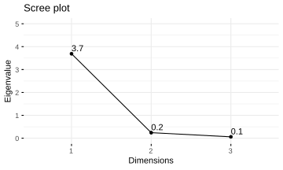

Chapter 2 Principle Component Analysis
2.1 Workflow of PCA
2.1.1 Conceptual
2.1.2 Computational (with R)
- Note:
sdevofprcomp()are Standard Deviations. To get the eigenvalues of the covariance (correlation) matrix, or equivalently, variances of the principle components, you need to squaresdev.
2.2 Conversion Between Correlation & Covaraince Matrices
2.2.1 prcomp()
The function prcomp() in base R stats package performs principle component analysis to input data.frame(with observations as rows and variables as columns), but it returns neither covariance nor correlation matrix. You can compute them directly by passing data.frame to cor() and cov() directly in R without any additional package.
2.2.2 Covariance to Correlation
Sometimes there is no raw data but only covariance or correlation matrix, and you may want to convert one to another. This can be done by using simple matrix multiplication, based on the fact that
\[\mathbf{R} = diag(\mathbf{S})^{\frac{-1}{2}} ~ \mathbf{S} ~ diag(\mathbf{S})^{\frac{-1}{2}} \tag{2.1}\]
, where \(\mathbf{R}\) is the correlation matrix, \(\mathbf{S}\) is the covariance matrix, and \(diag(\mathbf{S})\) is the diagonal matrix composed of diagonal elements of \(\mathbf{S}\).
2.2.3 eigen()
After obtaining the covariance or correlation matrix, direct computation of eigenvalue and eigenvectors is straightforward: pass the matrix to base R eigen() function.
cov(iris[,1:3]) %>% eigen()eigen() decomposition
$values
[1] 3.69111979 0.24137727 0.05945372
$vectors
[,1] [,2] [,3]
[1,] 0.38983343 0.6392233 -0.6628903
[2,] -0.09100801 0.7430587 0.6630093
[3,] 0.91637735 -0.1981349 0.34784352.3 Scree Plot
Scree plot is an important tool for determining the importance of principle components. Although the logic of plotting scree plots is easy, it may be quite annoying for repeating the code every time.
2.3.1 screeplot() from Base R
There is a ready-written function for scree plot in stats package, but the output is terrible:
prcomp(iris[,1:3]) %>% screeplot(type="lines")2.3.2 fviz_eig() from factoextra
For a better-looking scree plot function, I recommend fviz_eig() from factoextra (Kassambara and Mundt 2017). fviz_eig() has better looking outputs and more customizable plotting parameters, and since it is based on ggplot2, you can actually enhance it with the ggplot2 syntax: +.
library(factoextra)
prcomp(iris[,1:3]) %>% fviz_eig()
prcomp(iris[,1:3]) %>%
fviz_eig(choice = "eigenvalue", # y as eigenvalue
geom = "line",
addlabels = T) +
scale_y_continuous(limits = c(0, 5))
2.3.3 Customized Function
I have OCD with plotting, so not completely satisfied with factoextra::fviz_eig(). So I created my own scree_plot() by building on fviz_eig()3, which supports double y-axis: one showing eigenvalue, the other proportion of total variance explained.
2.4 Q-Q Plot
Q-Q plots are for checking the normality assumuption and are also useful for detecting outlyers. Principle components are linear combinations of the original variables, so if the original variables come from a multivariate normal distribution, principle components are expected to have normal distributions.
2.4.1 qqnorm() from Base R
There is also a base R qqnorm() function, which plots sample quantiles against theoretical quantiles obtain from the standard normal distribution.
prcomp(iris[1:60, 1:3])[["x"]][,1] %>%
qqnorm()prcomp(data.frame)[["x"]] returns the principle component scores, i.e. data that are rotated or weighted by the elements of the eigenvectors.
prcomp(data.frame)[["x"]][,1] subsets the first column of the principle component scores, which is the scores of the First principle component, i.e. data weighted according to elements of the first (corresponding to the largest eigenvalue) eigenvector.
2.4.2 Self-defined Function
qqnorm() is pretty good but lacks one important feature: labeling points on the Q-Q plot so that identification of the points is possible.
So I wrote my own function QQplot, which labels every point on the graph:
QQplot <- function(x, ID="none",
theme=NULL, color="red", text=TRUE,
text_adj=
c(hjust=-0.1, vjust=0, size=3)) {
library(dplyr)
library(ggplot2)
x <- as_data_frame(x)
n <- nrow(x)
quantiles <- qnorm(p=seq(0.5/n, 1-0.5/n, 1/n))
if (ID == "none") { # assign ID if not passed
ID <- as.character(1:n)
} else {
ID <- as_data_frame(ID)
ID <- as.character(ID[[colnames(ID)]])
}
if (text == TRUE) {
text <- geom_text(aes(label=ID),
hjust=text_adj[1],
vjust=text_adj[2],
size = text_adj[3])
} else {text <- NULL}
data <- cbind(ID, x)
colnames(data) <- c("ID", "x")
data <- data %>% arrange(x) %>% mutate(quantile=quantiles)
pl <- ggplot(data, aes(x=quantiles, y=x))+
geom_point(color=color)+
text + theme +
labs(x="Theoretical Quantile",
y="x",
title="Q-Q Plot")
pl
}prcomp(iris[1:60, 1:3])[["x"]][,1] %>%
QQplot()Package Used
Kassambara, Alboukadel, and Fabian Mundt. 2017. Factoextra: Extract and Visualize the Results of Multivariate Data Analyses. https://CRAN.R-project.org/package=factoextra.
The Conceptual workflow of PCA at Section 2.1.1 is based on spectral decomposition.↩
You can check the answers at Stack Overflow↩
Check
multivariate_fc.R, starting at line 46.↩